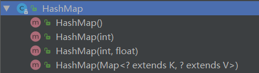
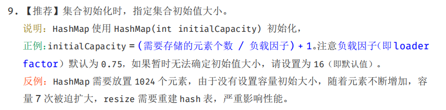

HashMap的默认初始容量为16。
1. HashMap的数据结构
Java中HashMap的数据结构：
- JDK1.7：数组+链表的组合。
- JDK1.8：数组+链表/红黑树的组合。
2. HashMap的属性
2.1 重要的常量
通过源码查看HashMap的一些重要常量：
1 | /** |
2.2 重要的变量
通过源码查看HashMap的一些重要变量：
1 | /** |
2.3 认识Node<K,V>
在2.2有一段源码transient Node<K,V>[] table;，可知table是存储Node<K,V>的数组，可Node<K,V>是什么呢？
ps：transient 关键字的作用是：
一个类实现了序列化接口，那么这个类的所有属性和方法都会被序列化，但类中某些属性我们不想让它被序列化，那么就在这个属性前面加上transient 关键字，这个属性就不会被序列化。
查看源码：
1 | static class Node<K,V> implements Map.Entry<K,V> { |
Node翻译为节点，Node<K,V>是HashMap的一个内部类，实现了Map.Entry<K,V>接口，本质上就是一个键值对。但Node还封装了hash属性和next属性（这样就能实现链表或者红黑树）。
注意：
- hash属性就是Node中key通过
hash(key)方法的返回值。（在下面4.1.2和4.1.3会解释原理） - next就是下一个节点。
3. HashMap的构造方法
HashMap部分源码：
1 | public class HashMap<K,V> extends AbstractMap<K,V> |
3.1 HashMap的四个构造方法

public HashMap(int initialCapacity, float loadFactor)：构造一个指定初始容量和加载因子的空HashMap。public HashMap(int initialCapacity)：构造一个指定初始容量和默认加载因子（0.75）的空HashMap。public HashMap()：构造一个默认初始容量（16）和默认加载因子（0.75）的空HashMap。public HashMap(Map<? extends K, ? extends V> m)：用现有的一个Map来构造一个HashMap。
以上提到了两个参数：initialCapacity（初始容量）和loadFactor（加载因子）。
- 初始容量表示HashMap中桶的数量，也就是源码中
table数组的长度，默认初始容量为16。 - 加载因子是衡量一个散列表的空间使用程度。如果加载因子变大（加载因子可以大于1），表示空间利用率变大，但同时键与键碰撞率加大，链表长度变长，增删改查操作效率降低；加载因子变小，空间利用率降低，但同时键与键的碰撞率变小，链表长度变低，增删改查效率提高。默认值为0.75，是JDK开发者经过充分计算得出的最优值，我们一般不去修改。
3.2 容量重计算
当然，我们设置一个初始容量，HashMap并不一定直接采用我们设置的值，通过分析源码可以知道：
1 | static final int tableSizeFor(int cap) { |
- 如果我们设置的初始容量是2的幂，则HashMap直接采用我们设置的值。
- 若不是，HashMap会采用大于该值的第一个2的幂（比如我们设置3，则是4；设置7，则是8）。
注意：
- 通过以上方法得到的capacity却在构造方法中被初始化赋值给了threshold
this.threshold = tableSizeFor(initialCapacity);，我百思不得其解，觉得应该是this.threshold = tableSizeFor(initialCapacity) * this.loadFactor;才对，但其实在构造方法中并没有对table数组初始化，table的初始化被推迟到了put方法中，put方法会重新对threshold进行计算。 - JDK底层源码很多都采用了移位运算，大大提高效率。
3.3 推荐使用的构造方法
《阿里巴巴Java开发手册》推荐：

4. put方法
HashMap的put方法源码：
1 | public V put(K key, V value) { |
4.1 参数分析
int hash：通过hash(key)得到，这个方法查看4.3。K key和V value：待储存的键值对。boolean onlyIfAbsent：falseboolean evict：true
4.2 resize()方法
源码：
1 | final Node<K,V>[] resize() { |
resize()方法用于以下两种情况：
- put方法中初始化table。
- 扩容，size >= threshold的时候：size变量即HashMap中节点（就是Node键值对）的数量，threshold = capacity * load factor
注意：
分析
resize()源码可知，put方法中使用resize()方法初始化table时，有两种情况：- 使用不指定initialCapacity的HashMap构造方法，初始化长度为16的table。
- 使用指定initialCapacity的HashMap构造方法，初始化长度为超过指定initialCapacity的最小2次幂的table。
每次扩容都会新建一个table，新table大小为原table大小的2倍。
- 扩容时，会将原table中的各节点通过算法重新散列到新table中，但各节点在新旧table中有一定联系：要么下标相同，要么相差一个原table的大小。
4.3 hash(Object)方法
源码：
1 | static final int hash(Object key) { |
如果key为空，则hash值为0（这也是为什么HashMap的key可以为null的原因）。
如果key不为空，则hash值为：将key的hashCode与key的hashCode无符号右移16位得到的结果进行异或运算得到的结果。（所以自定义类作为HashMap的key要重写
hashCode()方法：
使用hash(Object)方法进行二次hash计算，而不直接采用.hashCode()，主要是为了让键值对更均匀的分布在各个桶中，减少键与键的碰撞，降低链表长度，提高增删改查性能。
4.4 总结
在put数据之前会检查table是否为空，因为HashMap的构造方法里都没有对tabel初始化，所以第一次put的时候table一定为空，用
resize()方法对table进行初始化。put时会对待储存的key和桶中的key进行比较是否相等，相等的条件是
p.hash == hash && ((k = p.key) == key || (key != null && key.equals(k)))。（所以自定义类作为HashMap的key要重写.equals方法：如果遍历桶中链表没找到key与待储存的key相等，则新建待储存key对应的Node插到链表尾。
每次插入结束都会检查size是否大于threshold，大于则调用
resize()方法。链表长度超过8就将链表转换为红黑树。